Compose
Images or text become structured assets and scene programs.
From images and text to interactive 3D
TACER builds structured 3D scenes, verifies their physical properties,
and refines them for simulation and robot manipulation.
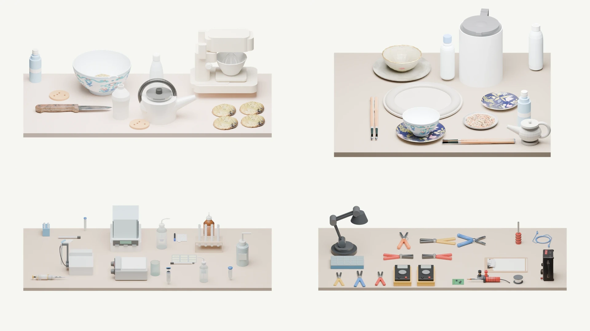
TACERFrom scene construction to interaction
Selected scene overviewImages or text become structured assets and scene programs.
Checks guide local repairs to geometry, support, and articulation.
Export scenes for simulation and robot task execution.
01 / Scene collection
Choose a scene. Look around.
Rotate and zoom into the arrangement.
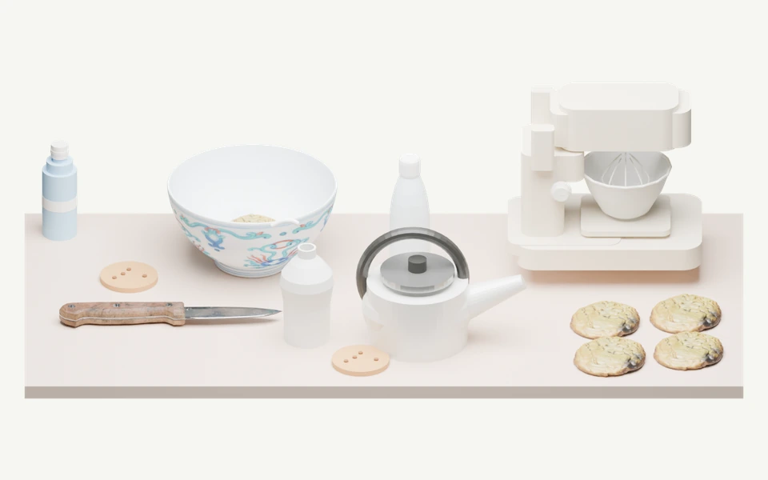
Explore in 3D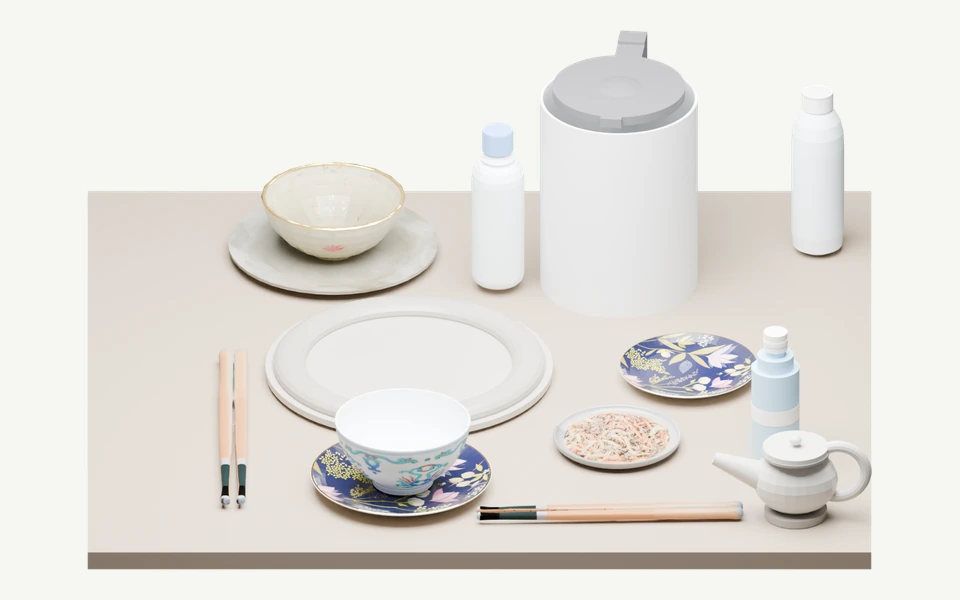
Explore in 3D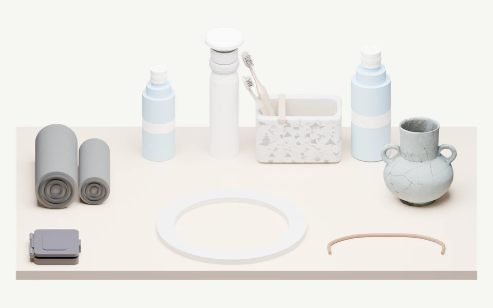
Explore in 3D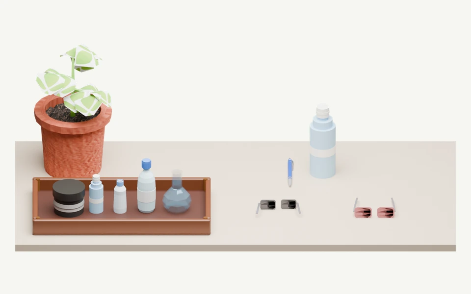
Explore in 3D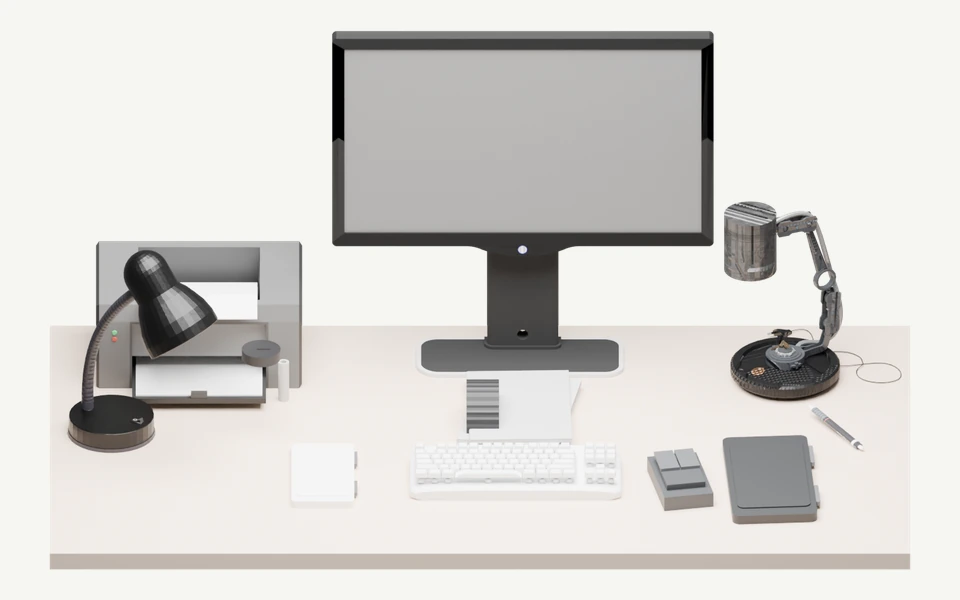
Explore in 3D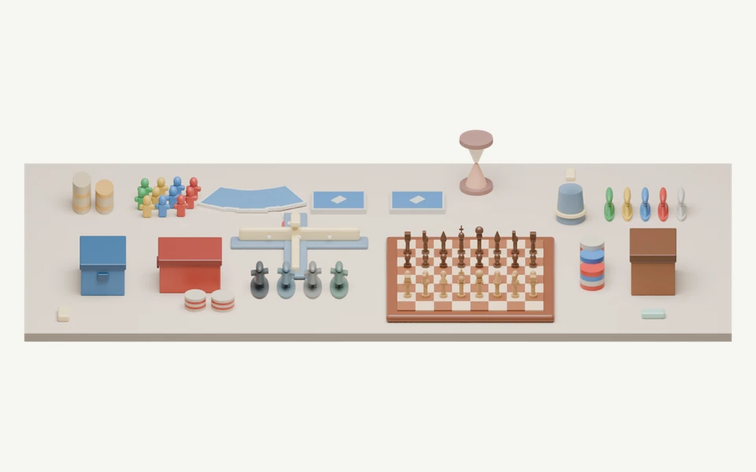
Explore in 3D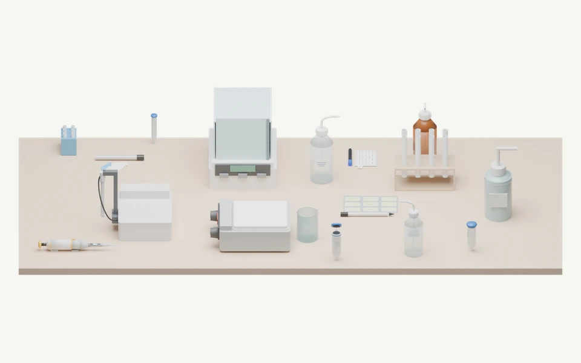
Explore in 3D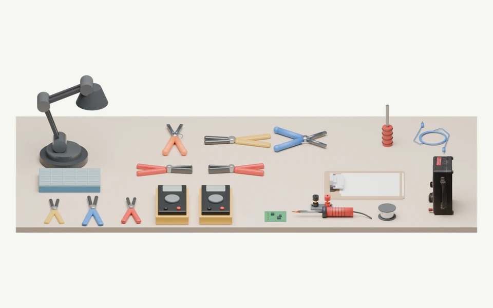
Explore in 3DEight curated scenes generated by TACER and refined through local repair. Open a scene to rotate, zoom, and inspect its 3D geometry. The reference render remains available alongside the model.
8 scenes · Interactive 3D02 / Interaction
Seven manipulation tasks,
seen through successful and failed runs.
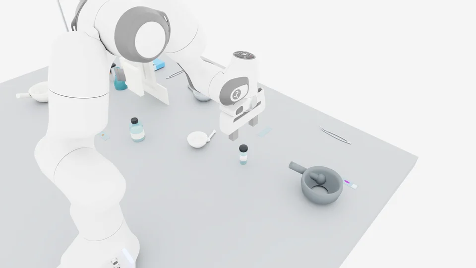
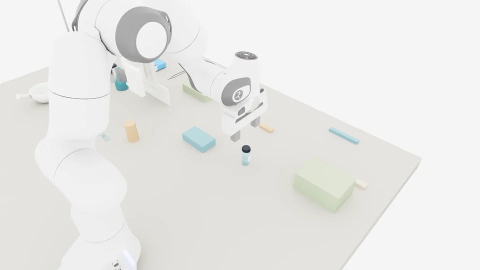
Pick · Grasp and lift the target object.
Selected qualitative examples. Runs can differ in timing and duration; the comparison replays each original sequence. Method identities for the supplied failure clips were not specified. Benchmark success rates are reported separately below.
03 / At scale
Shared structure.
Many environments and arrangements.
TACER-11K is the generated scene corpus. TabletopAudit is the separate evaluation benchmark used for the results below.
04 / Paper results
Results reported in the manuscript under shared benchmark protocols. The prepared scenes in this demo are separate qualitative examples.
RigidManip-60 · TASK
71.67%TACER task success, compared with 20.00% for TabletopGen.+51.67 percentage pointsArticulation-40 · TASK
60.00%TACER task success, compared with 5.00% for TabletopGen + Articraft.+55.00 percentage pointsCumulative pass rates (%): each gate requires all preceding gates to pass. Higher is better. Bold marks the best reported value.
| Method | LOAD ↑ | PHYS ↑ | STAB ↑ | GRASP ↑ | REACH ↑ | PLAN ↑ | PICK ↑ | TASK ↑ |
|---|---|---|---|---|---|---|---|---|
| TabletopGen | 81.67 | 63.33 | 56.67 | 46.67 | 40.00 | 33.33 | 23.33 | 20.00 |
| TACER | 100.00 | 96.67 | 93.33 | 90.00 | 86.67 | 85.00 | 78.33 | 71.67 |
LOAD: loading; PHYS: physics advancement; STAB: target settling; GRASP: grasp generation; REACH: reachability; PLAN: motion planning; PICK: physical pick; TASK: task completion.
| Method | LOAD ↑ | PHYS ↑ | STAB ↑ | POSE ↑ | REACH ↑ | PLAN ↑ | MOVE ↑ | TASK ↑ |
|---|---|---|---|---|---|---|---|---|
| TabletopGen + Articraft | 87.50 | 67.50 | 32.50 | 25.00 | 20.00 | 10.00 | 5.00 | 5.00 |
| TACER | 100.00 | 95.00 | 85.00 | 77.50 | 72.50 | 70.00 | 62.50 | 60.00 |
POSE: contact/action pose generation; MOVE: executed joint motion. The articulated baseline augments TabletopGen with Articraft. Articulated TASK measures goal attainment during execution with contact and base-drift checks; sustained or terminal goal holding is not required.
Pass rates (%) for binary metrics. LPIPS is lower-is-better; DINOv2 and CLIP report feature cosine similarity, higher-is-better. Bold follows the manuscript.
| Method | CNT ↑ | REL ↑ | PLC ↑ | ATR ↑ | COL ↑ | SUP ↑ | EDGE ↑ | CLR ↑ |
|---|---|---|---|---|---|---|---|---|
| Holodeck-table | 18.43 | 7.20 | 17.98 | 19.76 | 97.20 | 94.87 | 98.71 | 58.40 |
| MesaTask | 23.83 | 9.80 | 21.95 | 22.86 | 9.40 | 83.99 | 97.49 | 10.00 |
| TabletopGen | 67.80 | 24.20 | 26.14 | 56.68 | 67.60 | 99.05 | 96.54 | 63.60 |
| TACER | 99.86 | 78.65 | 95.82 | 68.35 | 99.40 | 98.65 | 98.61 | 75.80 |
CNT: count; REL: spatial relation; PLC: placement; ATR: visible attributes; COL: collision avoidance; SUP: static support; EDGE: workspace boundary; CLR: access clearance.
| Method | CNT ↑ | REL ↑ | PLC ↑ | ATR ↑ | COL ↑ | SUP ↑ | LPIPS ↓ | DINOv2 ↑ | CLIP ↑ |
|---|---|---|---|---|---|---|---|---|---|
| MIDI | 49.29 | 20.55 | 12.05 | 28.68 | 44.80 | 19.29 | 0.4126 | 0.6542 | 0.8741 |
| SAM3D | 98.95 | 63.25 | 53.25 | 60.13 | 81.20 | 99.35 | 0.3594 | 0.6063 | 0.7684 |
| TabletopGen | 76.42 | 31.60 | 34.94 | 61.83 | 74.80 | 99.23 | 0.3896 | 0.6463 | 0.8982 |
| TACER | 99.67 | 82.36 | 97.88 | 84.62 | 98.80 | 99.55 | 0.2589 | 0.8466 | 0.9199 |
Pass rates retain applicable unknown outcomes in the denominator. Metrics aggregate over their own requirement, scene, or object units; appearance metrics average cases with valid fixed-front-view evidence.
Evaluation protocol
TabletopAudit evaluates input fidelity, 3D quality, simulation validity, and embodied execution. Text and Image tracks share the same 500 cases across 9 domains.
Embodied-100 contains 60 rigid-object tasks and 40 articulated-object tasks. Evaluation distinguishes pass, fail, unknown, and inapplicable outcomes.
Objects, relations, placement, and attributes.
Collision, support, clearance, and appearance.
Loading, physics advancement, and stability.
Contact, planning, motion, and task completion.
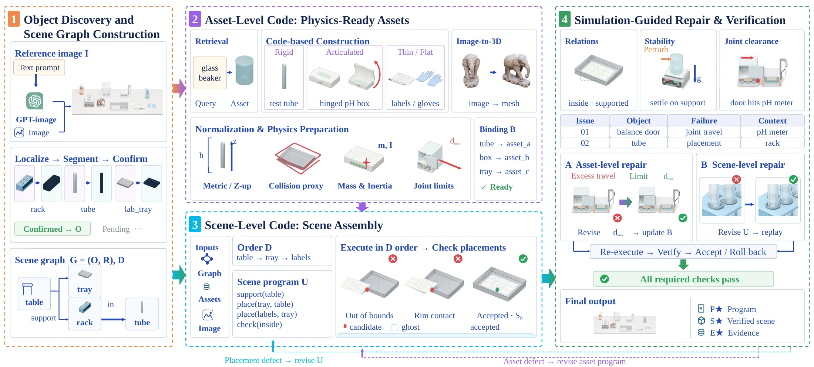